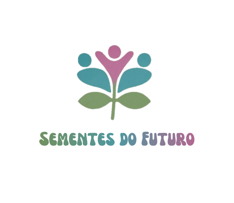

Feira de Profissões
Responda às questões e descubra o seu perfil de afinidade com cada área!
🔍 Modo Explicativo Ativado! Clique em qualquer pergunta abaixo para ver o código HTML, CSS e JS dela.
Seu Perfil de Afinidade por Área
Veja a porcentagem de compatibilidade com cada ramo profissional: